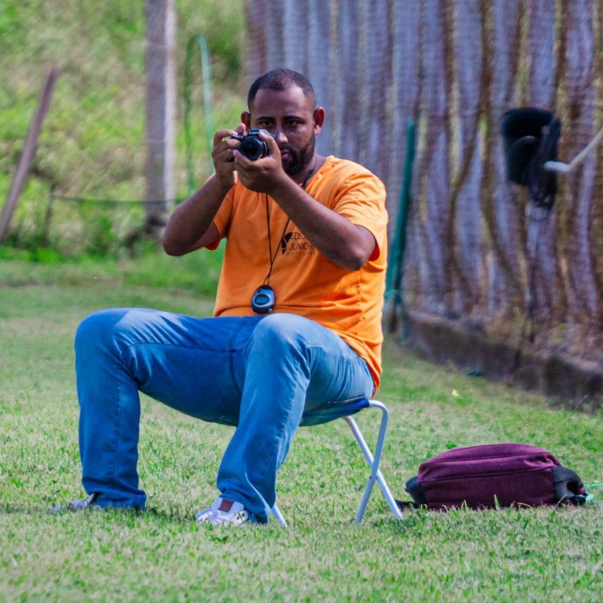
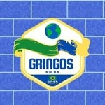

Portfólios no Instagram

@ejjorkar
Bastidores, viagens,momentos pessoais e cobertura esportiva profissional.
Ver no Instagram

Apaixonado por futebol desde a infância, Edson Junior encontrou na fotografia uma forma de contar histórias que vão além do placar. Graduado em Jornalismo pelo Centro Universitário Estácio de Juiz de Fora, construiu sua trajetória unindo rigor técnico, sensibilidade estética e compromisso com a informação.
Ao longo de sua carreira, especializou-se na cobertura do futebol do interior, acompanhando clubes, campeonatos e atletas em diferentes contextos. Seu trabalho registra o jogo como um todo: os lances decisivos, os bastidores, a preparação e as emoções que fazem parte de cada partida.
Reconhecido pelo público e pelo mercado, Edson vem sendo eleito — desde 2021 — o melhor fotógrafo esportivo de São João Nepomuceno e região. Seu portfólio inclui produções editoriais, institucionais, projetos autorais e trabalhos com equipes amadoras e profissionais.
Profissionalismo, dinamismo e precisão técnica definem sua atuação. Em cada registro, busca o instante exato que traduz a intensidade do futebol e transforma momentos em imagens que permanecem.
Bastidores, viagens,momentos pessoais e cobertura esportiva profissional.
Ver no Instagram